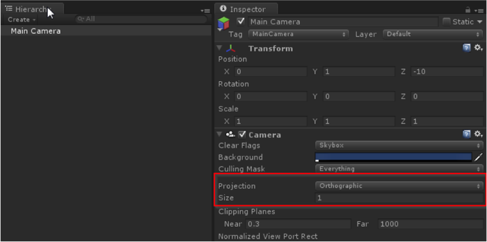
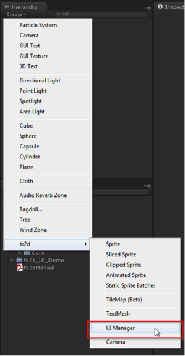
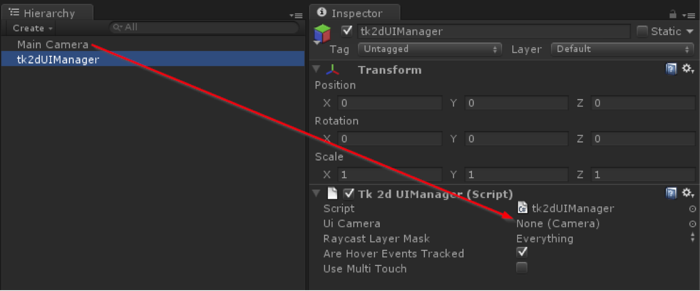
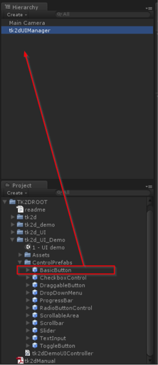
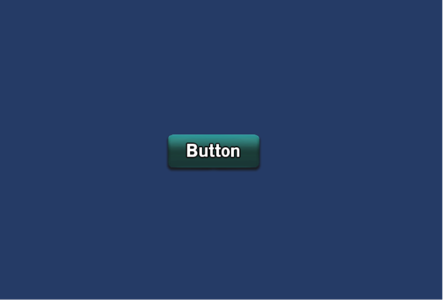

Documentation
Script Reference
Forum
Documentation
Script Reference
Forum
This quick tutorial will go through a basic walkthrough of adding a button to your scene.
Create a new scene.
Click on Main Camera object in the Hierarchy Window, and the Camera editor inspector appears.
In Main Camera Inspector set Projection = Orthographic and Size to 1.

The UI prefabs are set up with an orthographic size of 1, but you are free to change them when you replace the graphics later.
Create UIManager by clicking on "Create > tk2d > UI Manager" in the Hierarchy Window.

Click on the UIManager object in the Hierarchy Window, and the UIManager editor inspector appears. Drag the camera used to show the UI in the scene into the 'UI Camera' field in the inspector.

In Project View, navigate to TK2DROOT/tk2dUIDemo/ControlPrefabs
Drag the BasicButton prefab into the scene.

Hit Play and you will be able to click this newly created button.

Refer to Understanding the UI System and building your own components for more information on events and how you can use them.